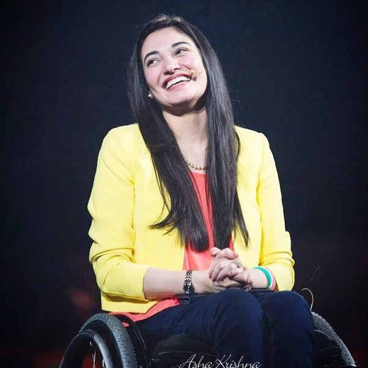

Muniba Mazari
Muniba Mazari Baloch was born on 3 March 1987, also known as the Iron Lady of Pakistan is a Pakistani activist, anchor artist, model, singer and motivational speaker. She became the National Ambassador for UN Women Pakistan after being shortlisted in the 100 Inspirational Women of 2015 by BBC. She also made it to the Forbes 30 under 30 list for 2016.
“When you think the glass is half empty always remember that the glass is half full.”
Personal Life
Muniba Mazari baloch is from a Baloch background, belonging to the tribe of Mazari.She was born in Rahim Yar Khan which is in southern Punjab on 3 March 1987.Muniba went to the Army Public School, and later attended college in her native home town for a BFA.At the age of 18, before she could complete her studies, she was married. In 2008, she was involved in a crash, which left her paraplegic.
Achievements
- 100 Inspirational Women of 2015
- 500 most influential muslims of the world
- First Pakistani Goodwill Ambassador for UN women
- Forbes 30 under 30